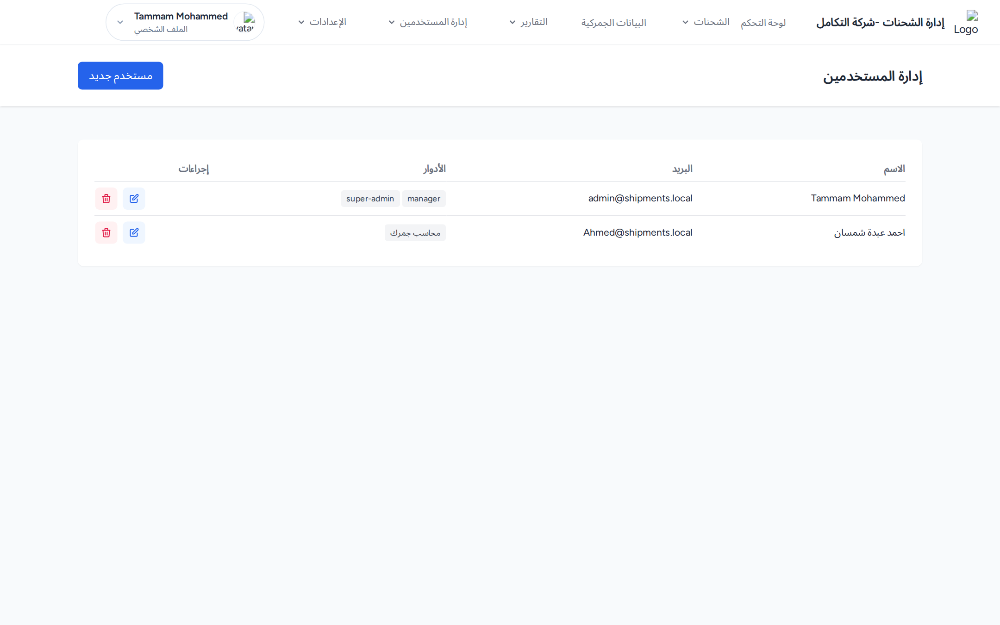
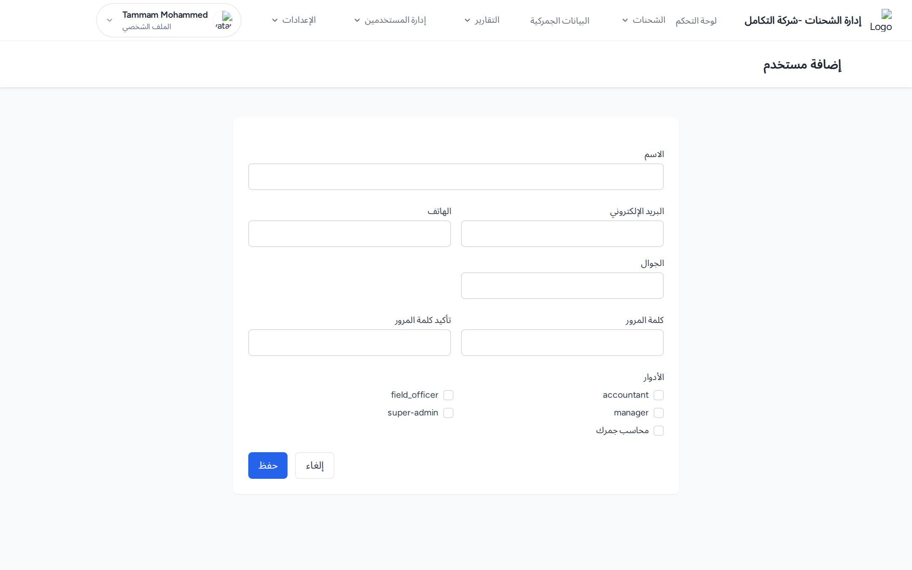
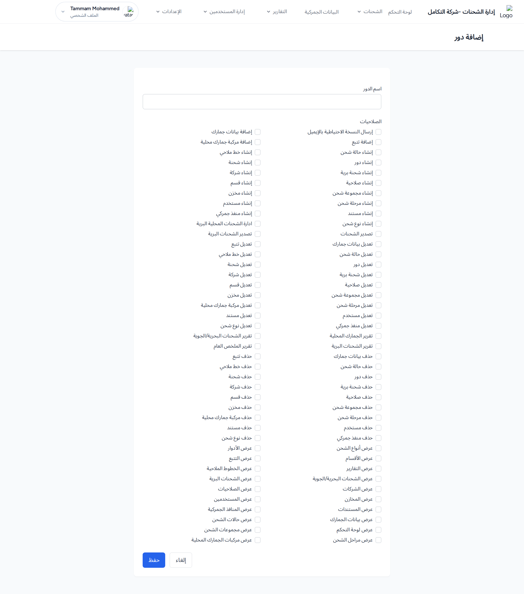

1. المستخدمون
صفحة «إدارة المستخدمين» تعرض جدولاً بأعمدة: الاسم، البريد، الأدوار، إجراءات. زر مستخدم جديد للإضافة.

صفحة «إدارة المستخدمين»: أعمدة الاسم والبريد والأدوار، وزر «مستخدم جديد».
إضافة / تعديل مستخدم
- اضغط مستخدم جديد (أو أيقونة تعديل).
- أدخل الاسم *، البريد الإلكتروني، الهاتف، الجوال.
- عند الإنشاء أدخل كلمة المرور * وتأكيد كلمة المرور *.
- من شبكة الأدوار فعّل خانة كل دور تريد منحه للمستخدم.
- اضغط حفظ.

نموذج إضافة مستخدم: حقول البيانات وكلمة المرور وشبكة خانات «الأدوار».
المخرجات المتوقعة: رسالة «تم إنشاء المستخدم بنجاح» (أو «تم تحديث المستخدم بنجاح»). ملاحظة: لا يمكن حذف مستخدمي النظام ولا المستخدم الذي سجّل دخوله حالياً.
2. الأدوار
صفحة «إدارة الأدوار» تعرض الأدوار وصلاحيات كل دور.
إضافة / تعديل دور
- اضغط دور جديد.
- أدخل اسم الدور *.
- من شبكة الصلاحيات فعّل الصلاحيات المطلوبة لهذا الدور.
- اضغط حفظ.

نموذج إضافة دور: حقل «اسم الدور» وشبكة خانات «الصلاحيات».
المخرجات المتوقعة: رسالة «تم إنشاء الدور بنجاح». ملاحظة: لا يمكن حذف دورَي «المدير العام» و«المدير».
3. الصلاحيات
صفحة «إدارة الصلاحيات» (تظهر لمستخدمي النظام فقط) لتعريف الصلاحيات. حقول الإضافة/التعديل: الاسم البرمجي * والاسم بالعربي *.
الصلاحيات هي ما يحدّد ظهور القوائم والأزرار. عند منح دور صلاحياتٍ معينة، يرى أعضاؤه الوحدات المرتبطة بها فقط.